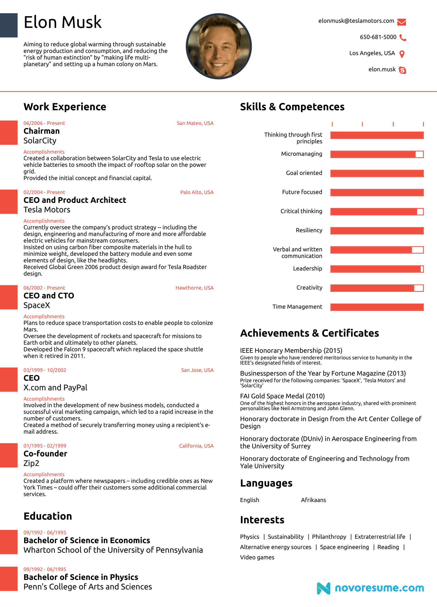
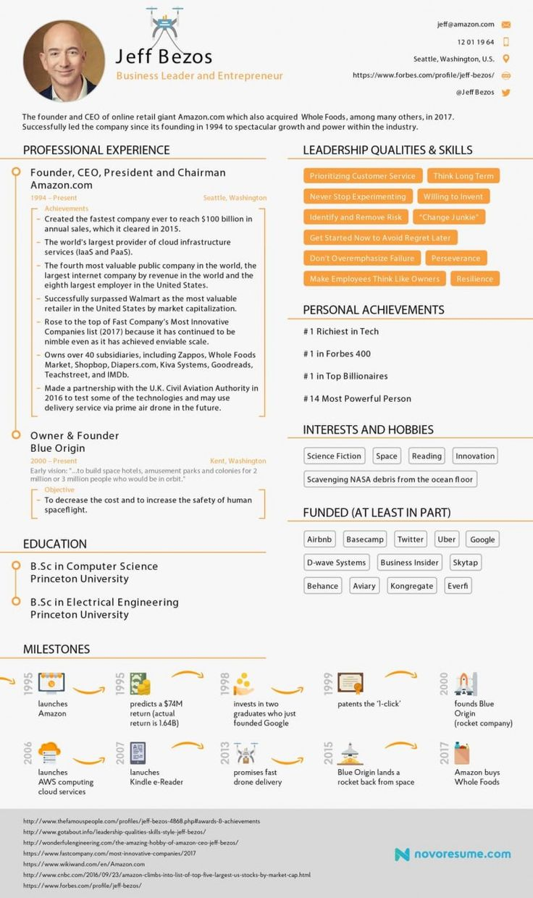

Exemplo de currículo
Observe a hierarquia das informações e a organização visual. Adapte a estrutura para a sua realidade; não copie dados pessoais ou experiências de outra pessoa.

Ampliar imagem ↗Preparação · Currículo
Use estas referências como inspiração. O mais importante é apresentar sua própria trajetória com honestidade e destacar o que tem relação com a vaga.
Observe a hierarquia das informações e a organização visual. Adapte a estrutura para a sua realidade; não copie dados pessoais ou experiências de outra pessoa.

Ampliar imagem ↗Compare estilos e escolha uma apresentação simples, legível e adequada à área em que você quer trabalhar.

Ampliar imagem ↗Revise telefone e e-mail, confira a ortografia, salve em PDF e adapte o resumo e as competências à oportunidade. Inclua apenas informações verdadeiras.